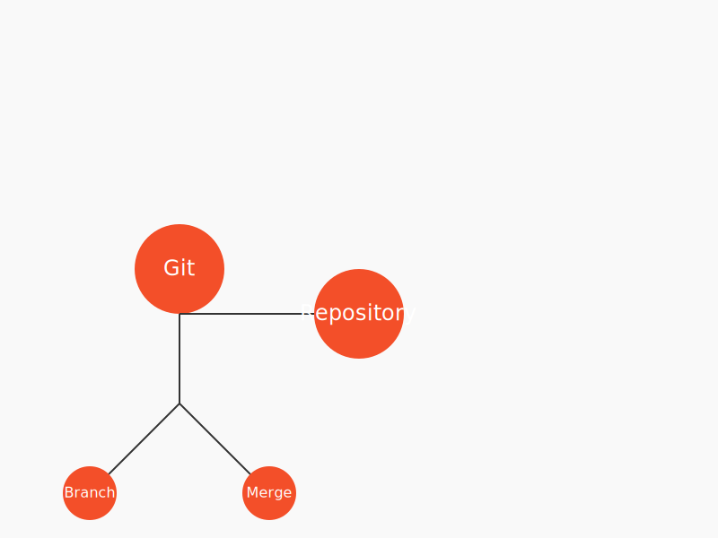

What is Git?
Git is a distributed version control system that allows multiple developers to work on a project simultaneously without interfering with each other's changes. It tracks changes in source code during software development.
What is GitHub?
GitHub is a web-based platform that uses Git for version control. It provides a user-friendly interface for managing Git repositories and offers features like issue tracking, project management, and collaboration tools.